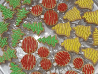
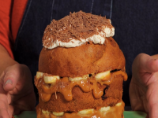
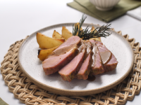

Biscoitos decorados para o Natal
Ingredientes (50 porções)
- 250 g farinha de trigo
- 100 g de margarina culinária
- 100 g açúcar de confeiteiro
- 1 ovo inteiro
- 1 gema
- essência de limão a gosto
- glacê real pronto para decoração
- corante para decoração
Modo de preparo : 2h
1 Misture a manteiga com a farinha. 2 Acrescente o açúcar, ovo, gema e a essência. 3 Misture bem até obter uma massa lisa. 4 Envolva essa massa em filme plástico e leve à geladeira por 30 minutos. 5 Abra a massa entre filmes com auxílio de um rolo na espessura de meio centímetro. 6 Corte com cortador de biscoito com desenho de sua preferência. 7 Coloque em forma (não precisa untar) e leve em forno preaquecido a 180°C por 10 minutos até corarem. 8 Fique de olho que assam bem rápido, cuidado para não queimar. 9 Espere esfriar. 10 Prepare o glacê real conforme instruções da embalagem. 11 Coloque corante, misture bem e coloque-os em saquinhos para confeitar. 12 Abuse da sua criatividade. 13 Deixe secar por 2 horas para depois colocar em potes ou embalar em saquinhos para presentear.

Banoffee Tone
Ingredientes (6 porções)
- 1 panettone Gotas de Chocolate Seven Boys
- 200 g de doce de leite
- 200 g de banana nanica madura e firme em rodelas
- 150 ml de creme de leite fresco batido em ponto de chantili
- Raspas de chocolate a gosto
Modo de preparo : 30min
1 Retire o papel que envolve o panettone. 2 Corte em 3 fatias horizontais. 3 Sobre a primeira fatia coloque cerca de 3 colheres (sopa) de doce de leite e metade da banana. 4 Repita o processo e finalize com o topo do panettone. 5 Cubra com o chantili e as raspas de chocolate. 6 Sirva em temperatura ambiente ou com 30 minutos de geladeira.

Pernil assado com batata
Ingredientes (12 porções)
- 2,5 kg de pernil desossado
- copo de vinagre branco
- 1 pimentão verde
- 1/2 xicara de suco de limão
- 1/2 xícara de azeite
- 2 cebolas médias
- 6 dentes de alho
- 2 cubos de caldo de carne
- 1 xícara de água
- 6 batatas médias
- Pimenta-do-reino e sal a gosto